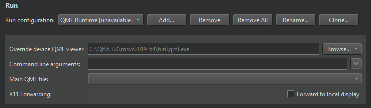

Qt Quick UI Prototype Run Settings
Specify settings for running applications on the Run device that you select for a kit in Projects > Build & Run > Run > Run Settings.
Note: Select the Desktop device type for the Run device in the kit.

The following table summarizes the settings for running Qt Quick UI Prototype projects (.qmlproject).
| Setting | Value |
|---|---|
| Override device QML Viewer | Qt QML Viewer to use. |
| Command line arguments | Arguments to pass to the executable. |
| Main QML file | File to start Qt QML Viewer with. |
| Forward to local display | Shows a remotely running X11 client on a local display. |
See also Create Qt Quick UI Prototypes, Activate kits for a project, Configure projects for running, and Kits.